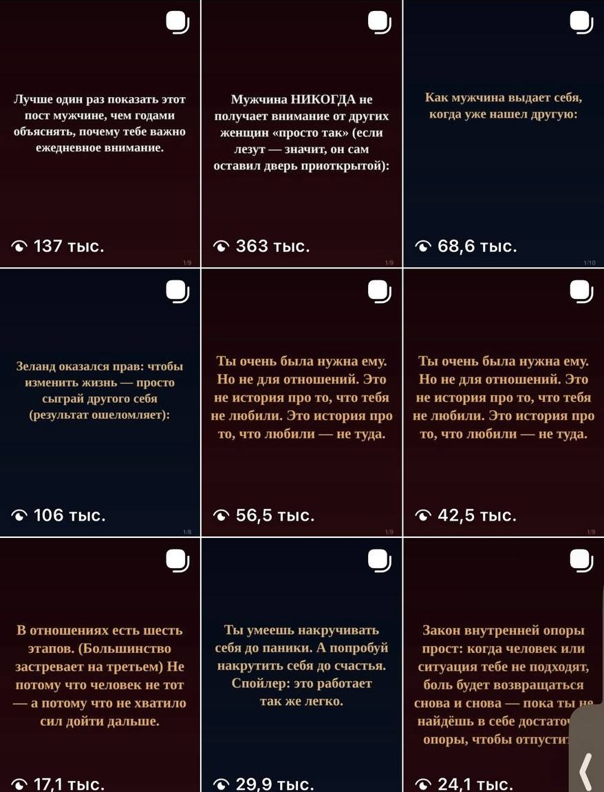
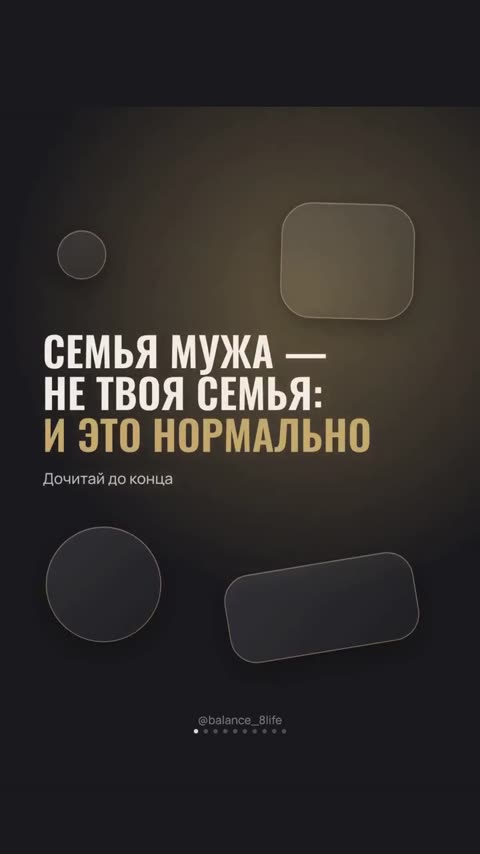
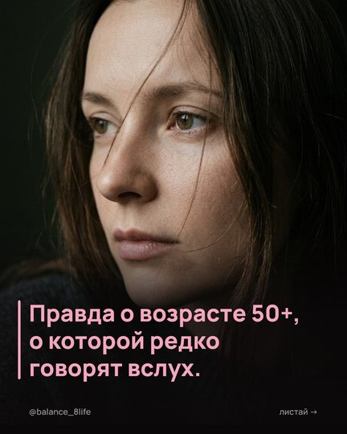
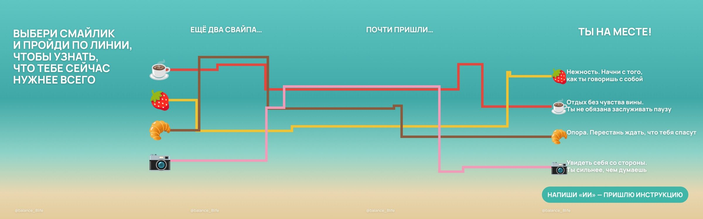
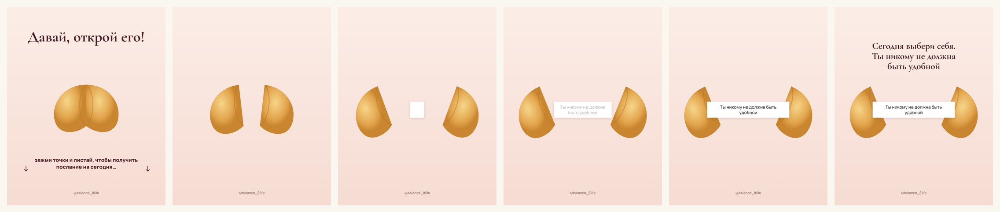
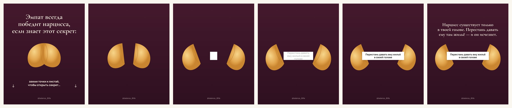
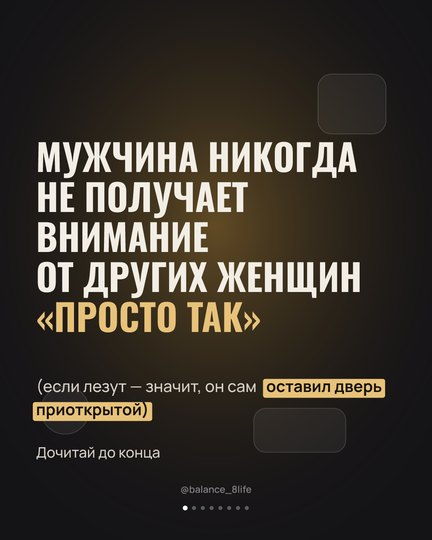

Пост-карусель — это пост из нескольких слайдов, которые листают пальцем. В 2026 году это формат с самой высокой вовлечённостью в Instagram*: его сохраняют, пересылают и досматривают до конца, а Instagram* сам показывает его повторно тем, кто пролистал. Больше всего охвата сейчас дают интерактивные карусели, где картинка, линия или анимация проходит через все слайды.
Почему формат посты-карусели так хорош
Я веду аккаунты о психологии с 2019 года и вырастила два из них с нуля до 150+ тысяч подписчиков. Рилсы приносили новых людей, но заявки, сохранения и пересылки приносили карусели. Человек листает слайд за слайдом, задерживается на посте, и для алгоритма это сигнал: пост интересный, его можно показывать дальше.
Цифры исследований говорят о том же:
Есть ещё одна причина, о которой редко говорят: карусель дешевле рилс. Не нужно сниматься, ставить свет и монтировать. Нужен хороший хук на первом слайде и понятная мысль на каждом следующем. Поэтому каждую карусель можно отдать ИИ-агенту, а самой только проверять.
Рилс — чтобы вас нашли. Карусель — чтобы вам поверили и написали. Я делаю оба формата, но заявки на консультацию в моих аккаунтах почти всегда приходят с каруселей.
Виктория ЩетВ каких соцсетях работают посты-карусели
Одну и ту же карусель можно выложить в нескольких местах. Слайды 1080×1350 подходят почти везде, меняется только подпись.
Instagram* главная
До 20 слайдов, повторный показ со второго слайда, с музыкой карусель попадает и в ленту рилс.
TikTok растёт
Фото-режим: карусель под музыку. Вовлечённость у фото-постов на 81% выше, чем у видео.
Threads
Несколько фото в одном посте листаются так же. Хорошо заходят карусели-истории и тесты.
Facebook*
Кросспостинг из Instagram* в один клик, аудитория постарше.
Карусель выкладывают PDF-документом, его листают как слайды. Работает для B2B и экспертов.
ВКонтакте и Telegram
Пост с подборкой фото или альбом. В Telegram в альбоме до 10 картинок.
Почему у карусели вечный охват и она работает вдолгую
Рилс живёт пару дней: набрал просмотры и ушёл вниз. С каруселью другая история. Мои карусели набирают просмотры неделями, а некоторые возвращаются в рекомендации через месяц. Вот почему так происходит:
- Второй показ. Кто пролистал карусель, тот увидит её снова, но уже со второго слайда. Поэтому второй слайд у меня всегда работает как вторая обложка.
- Сохранения. Карусель с пользой сохраняют, чтобы вернуться. Сохранение для алгоритма весит больше лайка, и пост продолжают показывать.
- Пересылки. Карусели про отношения отправляют партнёру и подруге, а это новые люди, которые на вас ещё не подписаны.
- Поиск Google. С 10 июля 2025 года публичные посты профессиональных аккаунтов, в том числе карусели и подписи к ним, попадают в выдачу Google. Подпись с ключевыми словами работает как маленькая статья.
- Поиск внутри соцсетей. Люди ищут в Instagram* и TikTok по словам, как в поисковике. Карусель с понятной темой находят и через полгода.

Как пользоваться шаблонами
Каждый формат ниже упакован в шаблон-агента. Устанавливать ничего не нужно, разбираться в нейросетях тоже.
Заберите шаблон.
Нажмите «Забрать шаблон» у нужного формата и напишите мне в Telegram. Я пришлю ссылку на архив.
Добавьте его в Claude или ChatGPT.
Перетащите архив в чат. Агент сам распакуется и задаст пару вопросов: ниша, тон, кодовое слово, ваш Telegram-канал.
Получайте карусели в своём стиле.
Пишете «сделай карусель про…» и забираете готовые слайды 1080×1350 и подпись с SEO-словами. Цвета, шрифты и голос агент запоминает.
Какие форматы постов-каруселей сейчас в тренде
Все примеры ниже сделали сами шаблоны, это не чужие посты. Нажмите на формат, чтобы перейти к нему.
 03 Зажми точки
03 Зажми точки

04 Живая карусель
05 Фото эксперта 06 Залётный хук
06 Залётный хук
Бегущая иконка
дорожка через все слайды · история с развязкой
Фраза на обложке обрывается растянутой буквой, буква превращается в дорожку, и по ней через все слайды едет иконка: конверт, сердце, чашка. На каждом слайде короткий кусок истории.
Почему листаютДорожка уходит за край слайда, и хочется узнать, куда она приведёт.
Под какие темыИстории из жизни, отношения, «вместо этого я…», анонсы.
Сделай карусель «бегущая иконка» на 7 слайдов. Тема: жена прочитала переписку мужа. Иконка: конверт. В конце кодовое слово ИИ.

Карусель целиком, все слайды подряд. На телефоне листайте ленту вбок.
26 446 и 22 652 просмотра у двух каруселей этого формата в @balance_8life. Скрины из статистики.
Пройди по линии
тест-игра · каждый проходит свою линию
На первом слайде человек выбирает смайлик и ведёт пальцем по своей цветной линии через все слайды. Линии переплетаются, а на последнем слайде каждого ждёт свой ответ.
Почему листаютЭто игра. Каждый проходит свою линию, а потом пишет в комментариях, что ему выпало, и комментариев становится очень много.
Под какие темыТесты, «что тебе сейчас нужно», ошибки, советы.
Сделай карусель «пройди по линии»: что тебе сейчас нужнее всего. 4 смайлика, 4 ответа про опору и отдых. Кодовое слово ИИ.

Линии идут через все четыре слайда и приводят к ответам.
Зажми точки и листай
мультик из слайдов · конверт, печенье с посланием
10–20 слайдов, на каждом картинка чуть сдвинута. Человек зажимает точки внизу карусели, слайды пролистываются сами и складываются в мультик: открывается конверт или печенье, и внутри послание.
Почему листаютХочется увидеть, что внутри. Такую карусель досматривают до конца и пересматривают, а это прямой сигнал алгоритму.
Под какие темыПослания, поддержка, «секрет», «до и после».
Сделай карусель «зажми точки»: печенье с посланием на сегодня. Послание: «Ты никому не должна быть удобной». 12 кадров.


Тот же формат с конвертом: на обложке хук, в конце открывается письмо.
Живая карусель
текст набирается на глазах · слайды-видео
Первые два слайда статичные, чтобы хук читался сразу. Остальные — короткие видео: текст появляется, пока человек его читает, ключевые слова выделяются плашками, пункты отмечаются галочками, на некоторых слайдах идёт переписка в чате.
Почему листаютКаждый слайд дочитывают до конца, поэтому время просмотра растёт. Готовое видео можно сразу выложить ещё и рилсом.
Под какие темыОстрые темы: родня мужа, измена, деньги в паре.
Сделай живую карусель: семья мужа — не твоя семья, и это нормально. 9 слайдов, переписка в чате на 5-м слайде, кодовое слово ОПОРА.
Три обложки живых каруселей: цвет акцента агент подбирает под тему.
Карусель с фото эксперта
ваше лицо на обложке · текст не закрывает лицо
На обложке ваше фото, текст агент ставит туда, где нет лица: ниже, на одежду или на фон. На остальных слайдах то же фото размыто под текст, и лента выглядит цельно.
Почему листаютЖивое лицо останавливает палец лучше любой графики, а люди быстрее начинают доверять тому, кого видят.
Под какие темыЛичные истории, мнение эксперта, разборы, «правда о…».
Сделай карусель с моим фото на обложке: правда о возрасте 50+, о которой редко говорят вслух. 10 слайдов, кодовое слово ИИ.
Внутренний слайд и последний слайд с призывом написать слово в комментариях.
Карусель на залётном хуке
классика 9 слайдов · хук, который уже собрал просмотры

Первые два слайда агент берёт дословно из карусели, которая уже залетела в вашей нише. Со третьего слайда пишет вашим голосом: механизм, признаки, практика. Восьмой слайд о вас, девятый — кодовое слово.
Почему листаютХук уже доказал, что останавливает людей. Не нужно угадывать, вы берёте проверенное начало и добавляете свою экспертизу.
Под какие темыЕжедневные посты: отношения, самооценка, деньги, здоровье, бизнес.
Сделай 3 карусели про отношения на хуках из банка. Обращение на «вы», без слова «токсичный», кодовое слово ОПОРА.
Под такими каруселями люди сами пишут кодовое слово и просят материал.
Чтобы карусель залетела
- Хук на первом слайде решает всё. Цифра, история или интрига. Если обложка не остановила, остальные слайды никто не увидит.
- Второй слайд как вторая обложка. Instagram* показывает его тем, кто пролистал пост в первый раз.
- Одна мысль на слайд. Крупный шрифт, короткие строки, текст читается без увеличения.
- Кодовое слово в конце. «Напишите ОПОРА в комментариях» даёт и комментарии, и заявки в директ.
- Подпись с ключевыми словами. 15–20 фраз, по которым вас ищут. Так пост находят в поиске соцсети и в Google.
- Добавьте музыку. С музыкой карусель может попасть ещё и в ленту рилс.
Частые вопросы
Что лучше для охвата: карусель или рилс?
Рилс чаще приводит новых людей, карусель сильнее вовлекает. По данным Buffer на 52 млн постов, вовлечённость по охвату у каруселей 6,9% против 3,31% у рилс. Лучше всего работает связка: рилс для новых людей, карусели для доверия и заявок.
Сколько слайдов можно сделать в карусели Instagram*?
До 20 фото и видео. Для текстовой карусели обычно хватает 7–10 слайдов, для формата «зажми точки» нужно 10–20 кадров.
Какой размер слайда карусели?
1080×1350 пикселей, вертикальный формат 4:5. Он занимает в ленте больше места, чем квадрат.
Можно ли сделать трендовую карусель через ChatGPT или Claude?
Да. Шаблон добавляется в чат Claude или ChatGPT архивом, сам распаковывается, спрашивает нишу, голос и кодовое слово и рисует готовые слайды с подписью.
Почему карусель набирает просмотры через недели?
Instagram* показывает её повторно тем, кто пролистал, начиная со второго слайда. Карусели сохраняют и пересылают, а с июля 2025 года публичные посты профессиональных аккаунтов попадают в поиск Google.
Подойдут ли трендовые карусели не психологу?
Да. Механика не зависит от ниши: бегущая иконка, линия или конверт работают и для коуча, и для бизнеса. Меняется только текст и кодовое слово.
Заберите шаблон себе
Напишите мне в Telegram, какой формат хотите, и я пришлю ссылку на шаблон. Если не знаете, с чего начать, начните с «Бегущей иконки»: она проще всех и даёт больше всего сохранений.
Написать в Telegram → Инструкции по ИИ-агентам в каналеИсточники
- Inman: Buffer, 52 млн постов — карусели 6,90% против 3,31% у рилс
- Fanpage Karma: карусели против видео в Instagram* и TikTok
- Socialinsider: бенчмарки Instagram* 2026
- Адам Моссери о каруселях и повторном показе
- Т-Банк Секреты: карусель расширили до 20 слайдов
- Metricool: посты Instagram* в поиске Google с 10 июля 2025
*Instagram и Facebook принадлежат компании Meta Platforms Inc., признанной экстремистской организацией, её деятельность запрещена на территории Российской Федерации.